Computer Vision Project 3: Stereo Depth Estimation
Goal:
Write a program that takes as input a rectified stereo pair, and creates a depth map of the scene, (where each pixel is color coded by your estimate of the depth).
Extension
One challenge is images that have large blank regions; develop some other heuristics or rules to "guess" what the best correspondence is for these large regions.
Intro
In stereo matching, we find correspondences between input images. Generally, we determine correspondence between two points by inspecting the pixel neighborhood N around both points. I then select the pairing that has the lowest sum of absolute differences as a corresponding point pair. In practice, a matching block is located for each pixel in an image. The relative difference in the location of the points on the image planes is the disparity of that point. Due to the assumption of being constrained into a 1-dimensional search space, these disparities can be represented as a 2D disparity map which is the same size as the image.
Assumptions
Constraining the problem into a 1-dimensional search space means I can model disparities as a 2D disparity map.I assume that disparity of a point is closely related to the depth of the point. I assume that the intensities of corresponding points in the images are identical. (note this is true only when the scene is Lambertian).
Dataset:
I found pairs of rectified stereo images (that were not solely evaluation sets) here, from the "Indoor", "Outdoor", and "Office" datasets. The datasets were created by Dr. Stefano Mattoccia of the University of Bologna. I also used the MYamanSKalkan_Multi-Modal_Stereo_Datasets, made by the KOVAN research lab, so I can compare their ground truth depth maps. Also useful was the classic Middlebury Stereo Vision Datasets.
Sample Results (Basic Implementation)
depth map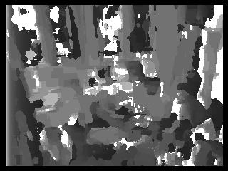 |
left image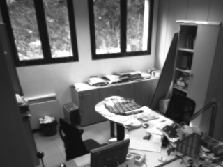 |
right image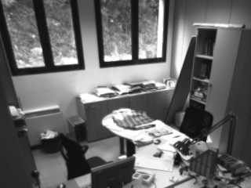 |
stereo depth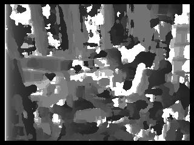 |
left image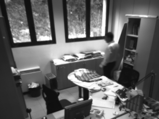 |
right image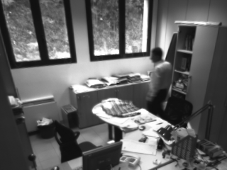 |
Implementation:
Big idea: find pixel-by-pixel correspondence from sum of absolute differences
Basic Algorithm
- Calculate an appropriate window size based on dimensions of image I
- interate over each pixel p in the left image:
- make each p the center of the L window and slide R window in the corresponding position of the right image.
- find the window positions with the minimum error with respect to the L and R windows; those are the corresponding points for p.
- calculate the disparity between the 2 points
- depth = dist_from_camera * camera_focus_length / 2_pts_disparity
Finding corresponding points:
In the basic implementation, I use sum of absolute differences for my error function, as inspired by this paper: Sum of Absolute Differences algorithm in stereo correspondence problem for stereo matching in computer vision application by Hamzah et. al. The sum of absolute differences function takes the absolute value of the differences between the left and right windows. Noticing that pairs of images in the Office dataset are very closely alligned, I felt it was only necessary to move my evaluation window across rows (rather than columns).
Extension: images with blank regions
Idea: the closer the pixel intesities are between the two, the more likely they are to be of similar depth. With this insight, and a few other computational tricks, maybe we can improve our error function somehow to handle these blank regions. Inspired by the Stereo Vision demo and resources available for Matlab, I decided to try my hand at dynamic programming to optimize the error function. As I observed from the results above, I block matching creates a noisy disparity image. However, we can reduce the noise with a smoothing constraint.In my basic implementation, I chose the optimal disparity for each pixel based on only its cost function.
I set up the problem as such:
- allow a pixel p to have a disparity with possibly suboptimal cost
- offset this extra cost by increasing p's agreement in disparity with its neighbors.
- do this by constraining each disparity estimate to lie with values of its adjacent pixels (along a row)'s disparities
- hence, instead of finding the optimal disparity estimates for a row of pixels, find optimal path from one side of I to the other
- find optimal path with SAD metric as the cost function and constrain the disparities to change by a certain amount between adjacent pixels
Extension Results
depth map |
left image |
right image |
depth map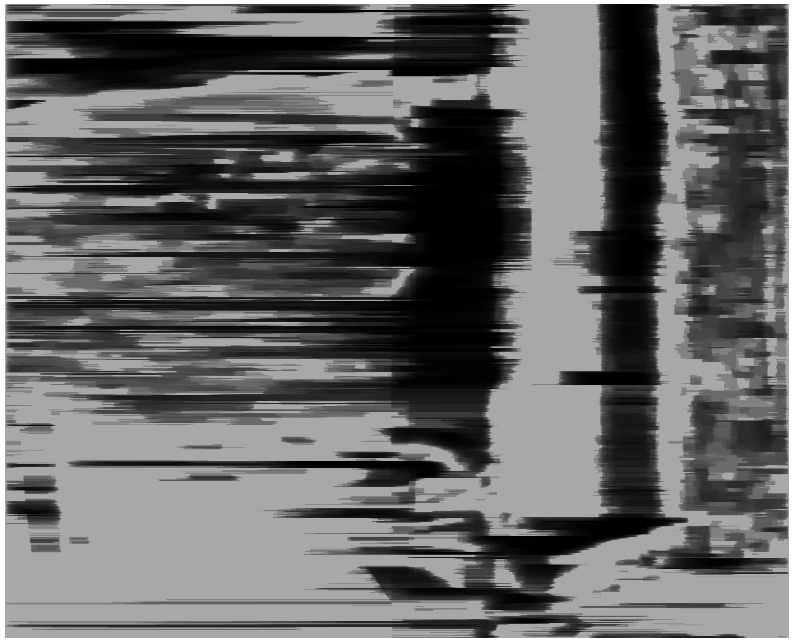 |
left image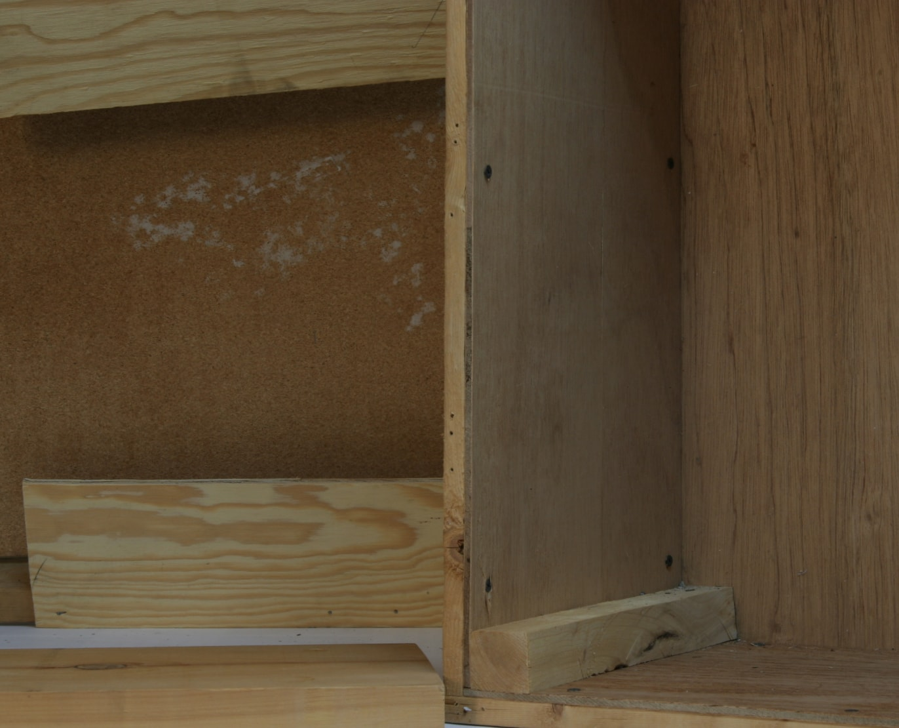 |
right image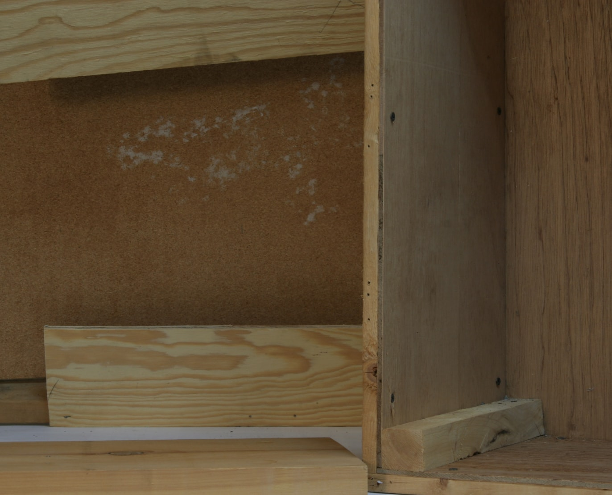 |
depth map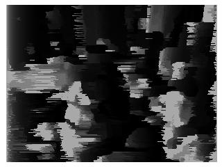 |
left image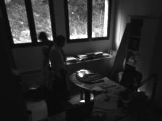 |
right image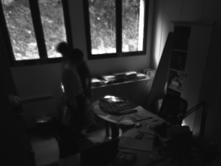 |